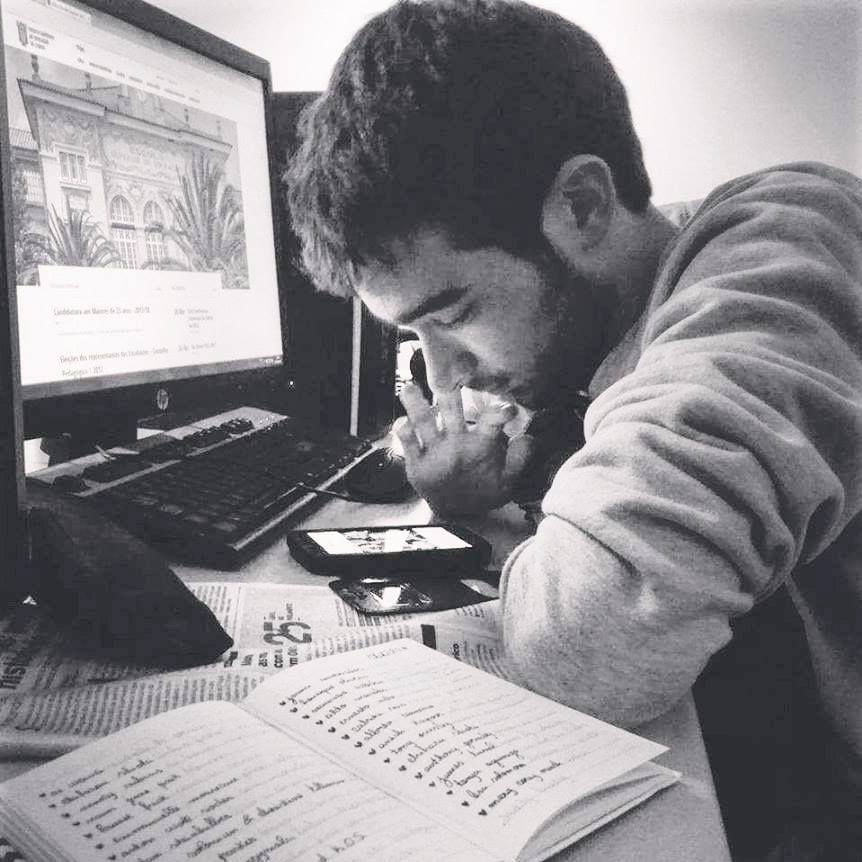

Formação
2018 - 2019
LSD - Lisbon School of Design - Curso de FormaçãoWebdesign e Programação
- Webdesign
- Webmarkting
- Usabilidade
- Programação Front-End
- Programação Back-End
- Base de Dados
Nota Final do Curso: 18
2014 - 2017
Instituto Politécnico de Lisboa - ESELx - Ensino Superior LicenciaturaArtes Visuais e Tecnologias
- Design de Interação
- Design Responsivo
- Design de UX e UI
- Design Gráfico
Nota Final do Curso: 14
2010 - 2014
Escola Secundária Domingos Rebelo - Ensino SecundárioArtes Visuais
- Básicos de Web
- Multimédia
- Photoshop
- Illustrator
Nota Final do Curso: 13